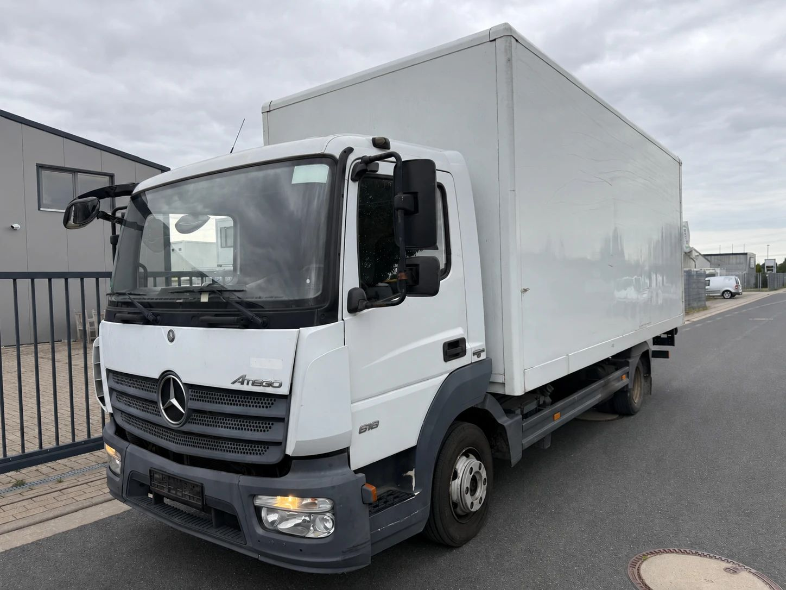
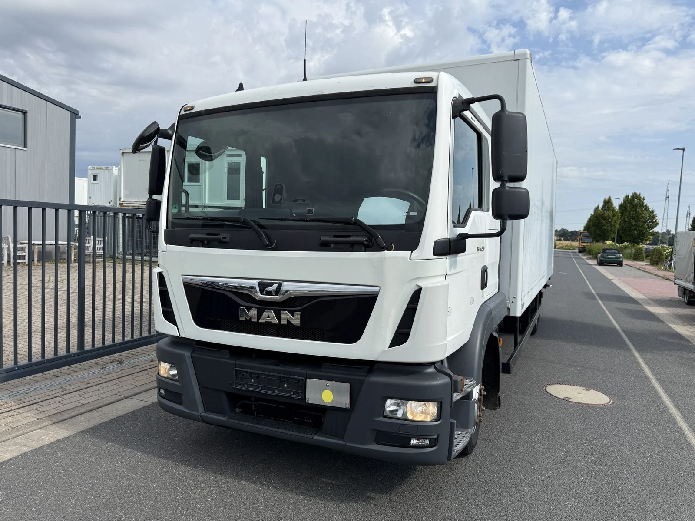
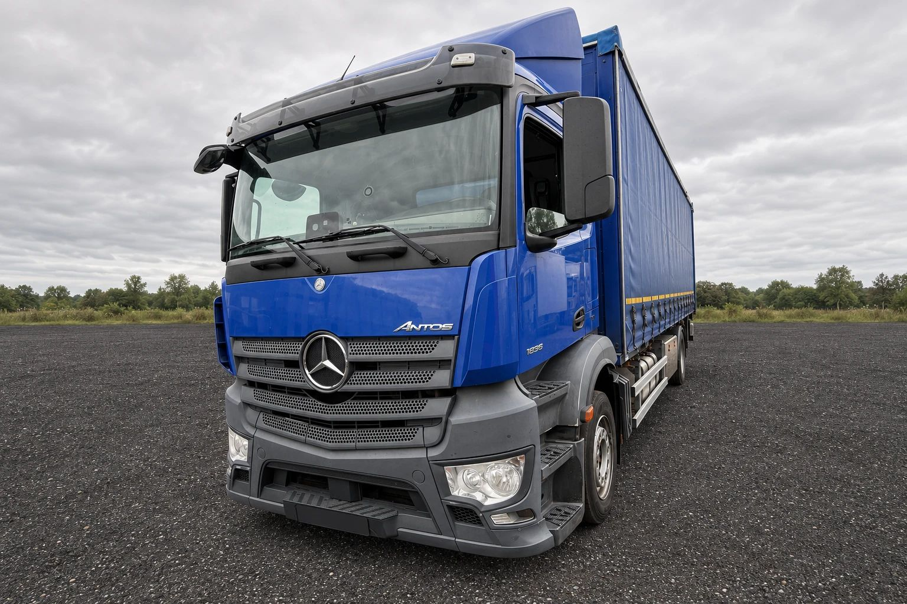
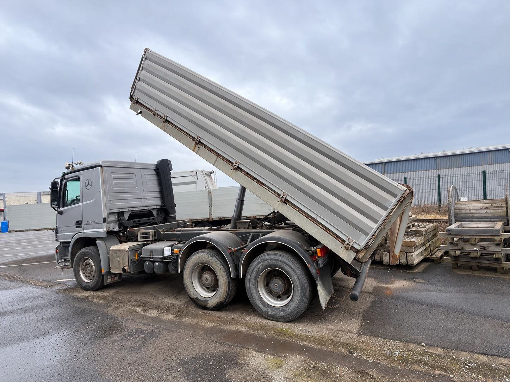
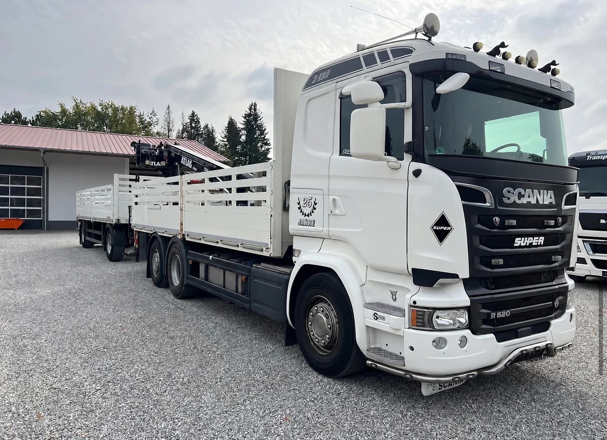

„7,5-Tonner“, „18-Tonner“, „40-Tonner“: Im Alltag nennt man LKW meist nach ihrem Gewicht. Gemeint ist das zulässige Gesamtgewicht, und davon hängt viel ab: welcher Führerschein nötig ist, wie schnell der LKW fahren darf, ob er Maut zahlt und ob er am Sonntag fahren darf.
In diesem Beitrag gehen wir alle üblichen Tonnenklassen durch, vom Transporter mit 3,5 Tonnen bis zum 40-Tonnen-Sattelzug, und erklären, was für Schwertransporte darüber gilt. Die Grafiken fassen das Wichtigste zusammen.

Was bedeutet die Tonnenangabe?
Wenn von einem 18-Tonner die Rede ist, geht es um das zulässige Gesamtgewicht: Fahrzeug plus Ladung plus Fahrer dürfen zusammen nicht schwerer sein. Davon zu unterscheiden sind:
- Leergewicht: was das Fahrzeug fahrbereit wiegt, ohne Ladung
- Nutzlast: zulässiges Gesamtgewicht minus Leergewicht, also das, was man tatsächlich laden kann
- Technisch zulässiges Gesamtgewicht: was der Hersteller freigibt. Es kann höher sein als das, was in Deutschland erlaubt ist.
Im Fahrzeugschein, der Zulassungsbescheinigung Teil I, steht unter F.1 die technisch zulässige und unter F.2 die in Deutschland zulässige Gesamtmasse. Bei vielen Herstellern verrät auch die Typenbezeichnung das Gewicht. Ein Mercedes-Benz Actros 2646 ist ein 26-Tonner mit rund 460 PS, ein MAN TGL 12.250 ein 12-Tonner mit 250 PS.
Die Obergrenzen legt § 34 StVZO fest: höchstens 18 Tonnen für Zweiachser, 25 oder 26 Tonnen für Dreiachser, 32 Tonnen für Vierachser und 40 Tonnen für Züge mit mehr als vier Achsen (§ 34 StVZO).
3,5 Tonnen: Transporter mit Führerschein B
Bis 3,5 Tonnen darf man mit dem normalen Autoführerschein der Klasse B fahren (§ 6 FeV). Hierher gehören Transporter wie der Mercedes-Benz Sprinter, VW Crafter oder Iveco Daily, als Kastenwagen, Pritsche oder kleiner Koffer. Für sie gilt Tempo 100 auf Landstraßen und keine Höchstgeschwindigkeit auf der Autobahn außer der Richtgeschwindigkeit.
Mit 3,5 Tonnen endet auch die Welt der PKW-Regeln. Alles, was schwerer ist, gilt als LKW im engeren Sinn: Es braucht einen LKW-Führerschein, zahlt Maut und muss Lenk- und Ruhezeiten einhalten.
7,5 Tonnen: der klassische Verteiler-LKW

Der 7,5-Tonner ist der kleinste „richtige“ LKW. Er braucht den Führerschein C1, mit Anhänger über 750 kg die Klasse C1E bis 12 Tonnen Zuggewicht. Wer seinen Führerschein vor 1999 gemacht hat, hat mit der alten Klasse 3 heute unter anderem C1 und C1E.
Typische Fahrzeuge sind der Mercedes-Benz Atego 816 oder 818, der MAN TGL 8er-Baureihe und der Iveco Eurocargo. Sie fahren als Koffer, Pritsche, Kühler oder Möbelwagen im Verteilerverkehr, bei Umzugsfirmen und im Handwerk.
Viele dieser LKW sind auf genau 7,49 Tonnen eingetragen, obwohl sie technisch mehr könnten. Der Grund: Bis einschließlich 7,5 Tonnen gelten mehrere Erleichterungen. Das Sonntagsfahrverbot betrifft nur LKW über 7,5 Tonnen (§ 30 StVO), auf Landstraßen sind 80 statt 60 km/h erlaubt (§ 3 StVO), und Handwerksbetriebe sind mit Fahrzeugen unter 7,5 Tonnen von der Maut befreit.
12 Tonnen: mehr Nutzlast, aber Führerschein C

Ab 7,5 Tonnen braucht man den vollen LKW-Führerschein der Klasse C. Der 12-Tonner ist beliebt, weil er bei kaum größeren Abmessungen deutlich mehr Nutzlast bietet als ein 7,5-Tonner. Typisch sind MAN TGL 12.250, Mercedes-Benz Atego 1224 oder DAF LF.
Auch hier findet man oft eine krumme Zahl: 11,99 Tonnen. Bis zum 30. September 2015 galt die LKW-Maut auf Autobahnen erst ab 12 Tonnen. Viele Fahrzeuge aus dieser Zeit sind deshalb knapp darunter eingetragen. Seit Juli 2024 zahlen LKW schon ab mehr als 3,5 Tonnen Maut, der Vorteil ist also weggefallen.
Mehr zu den Baureihen lesen Sie in unseren Beiträgen MAN 12-Tonner: TGL oder TGM? und Mercedes-Benz Atego.
18 Tonnen: das Maximum für zwei Achsen

Mit 18 Tonnen ist für einen Zweiachser Schluss. Der 18-Tonner ist das Arbeitstier im schweren Verteilerverkehr, auf Baustellen und bei Kommunen: als Koffer, Plane, Kipper, Absetzkipper, Kühler oder Müllwagen. Bekannte Vertreter sind Mercedes-Benz Antos und Atego 1824, MAN TGM und TGS 18er und der Volvo FL oder FM.
Viele 18-Tonner ziehen zusätzlich einen Anhänger. Dann braucht der Fahrer die Klasse CE, und der Zug darf je nach Achszahl bis zu 40 Tonnen wiegen. Den Antos haben wir in Mercedes-Benz Antos: Der schwere Verteiler ausführlich beschrieben.
26 und 32 Tonnen: Dreiachser und Vierachser

Wer mehr als 18 Tonnen auf einem Fahrzeug braucht, nimmt eine dritte oder vierte Achse dazu:
- Dreiachser: bis 25 Tonnen, mit Zwillingsreifen und Luftfederung an der Antriebsachse bis 26 Tonnen. Typisch für Kipper, Betonmischer, Abrollkipper und schwere Verteiler. Beispiele: Actros 2646, Arocs 2643, MAN TGS 26er, Scania P 6x4.
- Vierachser: bis 32 Tonnen. Das ist das Maximum für ein einzelnes Fahrzeug ohne Anhänger. Vierachser findet man vor allem als Baustellenkipper und Betonmischer, etwa als Arocs 3243 oder MAN TGS 32er.
Für beide reicht der Führerschein C. Wie Kipper, Betonmischer und Absetzkipper im Detail aufgebaut sind, erklären wir in den Beiträgen Kipper-LKW, Betonmischer LKW und Abrollkipper.
40 Tonnen: Sattelzug und Hängerzug
Der 40-Tonner ist der LKW, den jeder von der Autobahn kennt: meist eine Sattelzugmaschine mit dreiachsigem Auflieger, zusammen fünf Achsen. Für Züge mit mehr als vier Achsen erlaubt § 34 StVZO bis zu 40 Tonnen. Mit nur vier Achsen sind es je nach Kombination 35 bis 38 Tonnen.
Eine Ausnahme gibt es im kombinierten Verkehr: Fährt ein Sattelzug mit dreiachsiger Zugmaschine Container oder Wechselbrücken zum Bahnhof oder Hafen oder holt sie dort ab, darf er bis zu 44 Tonnen wiegen (§ 34 StVZO).
Neben dem Gewicht gelten feste Maße (§ 32 StVZO):
- Breite höchstens 2,55 m, bei Kühlfahrzeugen 2,60 m
- Höhe höchstens 4,00 m
- Sattelzug höchstens 16,50 m lang, Hängerzug je nach Bauart bis 18,75 m

Für Sattel- und Hängerzüge braucht man die Klasse CE. Bei Volvo erkennt man die Leistung an der Zahl hinter der Baureihe, bei Mercedes-Benz an den letzten Ziffern: Ein Actros 1845 ist eine 18-Tonnen-Sattelzugmaschine mit 450 PS, die im Zug 40 Tonnen bewegt. Mehr dazu in Actros MP1 bis MP5 und Volvo Sattelzugmaschinen.
Über 40 Tonnen: Schwertransporte
Alles, was schwerer, breiter, höher oder länger ist als erlaubt, ist ein Großraum- oder Schwertransport. Typische Ladungen sind Windkraftteile, Transformatoren, Brückenträger, Kranteile und große Baumaschinen. Gefahren wird mit schweren Zugmaschinen, oft mit drei oder vier Achsen, und Tiefladern oder Modulfahrzeugen mit vielen Achsen.
Für solche Fahrten braucht es zwei Dinge:
- Eine Ausnahmegenehmigung für das Fahrzeug nach § 70 StVZO. Sie gilt für das Fahrzeug selbst, meist über einen längeren Zeitraum (§ 70 StVZO).
- Eine Erlaubnis für den Transport nach § 29 Abs. 3 StVO, beantragt mit Gewicht, Achslasten, Maßen und genauer Strecke (§ 29 StVO).
Beantragt wird bundesweit digital über das Portal VEMAGS. Die Behörde fragt dabei alle Straßenbaulastträger entlang der Strecke an, auch die Autobahn GmbH, und prüft, ob Brücken und Straßen die Last tragen. Erst dann gibt es die Erlaubnis, oft mit Auflagen wie festen Fahrzeiten, häufig nachts, einer vorgeschriebenen Strecke und Begleitfahrzeugen (Bundesministerium für Verkehr). Große Transporte werden zusätzlich von der Polizei oder von Transportbegleitern mit eigener Anordnungsbefugnis abgesichert.
Einen besonderen Führerschein gibt es für Schwertransporte nicht. Der Fahrer braucht die Klasse CE und die Berufskraftfahrer-Qualifikation, in der Praxis aber vor allem viel Erfahrung.
Führerscheinklassen im Überblick

Die Klassen nach § 6 FeV im Einzelnen:
- B: Fahrzeuge bis 3,5 Tonnen, mit Anhänger bis 750 kg oder Zug bis 3,5 Tonnen
- C1: LKW über 3,5 bis 7,5 Tonnen, Anhänger bis 750 kg, ab 18 Jahren
- C1E: C1-LKW mit schwerem Anhänger, Zug bis 12 Tonnen
- C: alle LKW über 3,5 Tonnen, Anhänger bis 750 kg, ab 21 Jahren, mit Berufskraftfahrer-Grundqualifikation ab 18 (§ 10 FeV)
- CE: LKW der Klasse C mit Anhänger oder Sattelauflieger über 750 kg
Wer gewerblich fährt, braucht zusätzlich die Berufskraftfahrer-Qualifikation. Sie steht als Schlüsselzahl 95 im Führerschein und muss alle fünf Jahre mit einer Weiterbildung verlängert werden.
Was sich ab 3,5 und ab 7,5 Tonnen noch ändert
Nicht nur der Führerschein hängt am Gewicht. Die wichtigsten Grenzen:
- Ab mehr als 3,5 Tonnen: LKW-Maut auf Autobahnen und Bundesstraßen, Fahrtenschreiber und Lenk- und Ruhezeiten, auf der Autobahn höchstens 80 km/h (§ 18 StVO), Überholverbote für LKW über 3,5 Tonnen.
- Über 7,5 Tonnen: Sonntagsfahrverbot von 0 bis 22 Uhr, auf Landstraßen höchstens 60 km/h.
- Über 40 Tonnen oder mit Übermaß: Erlaubnis und Ausnahmegenehmigung nötig.
Welche Maut ein LKW konkret zahlt, hängt außerdem von Achszahl, Gewicht und Schadstoffklasse ab. Das erklären wir in Euro 3 bis Euro 6. Wie die Tonnenklassen zu den EU-Fahrzeugklassen N1, N2 und N3 passen, lesen Sie in Fahrzeugklassen N1 bis M3.
Warum die Tonnenklasse beim Verkauf zählt
Die Tonnenklasse entscheidet, wer einen gebrauchten LKW überhaupt kaufen kann. Ein 7,5-Tonner kommt für jeden Betrieb infrage, dessen Fahrer C1 oder die alte Klasse 3 haben. Für einen 12-Tonner braucht der Käufer Fahrer mit Führerschein C, für einen 40-Tonner Fahrer mit CE.
Deshalb gehören zu jeder Anfrage das zulässige Gesamtgewicht aus Feld F.2 des Fahrzeugscheins und die Zahl der Achsen. Wurde ein Fahrzeug ab- oder aufgelastet, sollte das ebenfalls in den Papieren stehen.
Wir kaufen LKW aller Tonnenklassen an
Die ECS Exclusive Commerce Services GmbH aus der Region Hannover kauft LKW an, vom Transporter bis zum 40-Tonner: Transporter, 7,5-Tonner, 12-Tonner, 18-Tonner, Dreiachser, Vierachser, Sattelzugmaschinen und Anhänger, einzeln oder als ganzen Fuhrpark. Weil wir Nutzfahrzeuge auch exportieren, finden wir oft auch für ältere Baujahre einen Abnehmer.
So läuft es ab:
- Sie rufen uns an, schreiben uns per WhatsApp oder senden uns eine E-Mail.
- Sie nennen uns Typ, Erstzulassung, Kilometerstand, zulässiges Gesamtgewicht und Aufbau und schicken ein paar Fotos.
- Wir machen Ihnen ein konkretes Angebot.
- Nach Ihrer Zusage erstellen wir den Kaufvertrag und schließen das Geschäft ab.
- Wir holen das Fahrzeug ab, deutschlandweit.
Mehr zum Ablauf lesen Sie unter Unsere Arbeit. Sie möchten Ihren LKW verkaufen? Schreiben Sie uns oder rufen Sie an.
Hinweis: Dieser Beitrag dient der allgemeinen Information und ersetzt keine Rechts- oder Steuerberatung. Alle Angaben ohne Gewähr, Stand: 22. November 2026. Genannte Marken und Modellbezeichnungen gehören ihren jeweiligen Inhabern. Die ECS GmbH ist ein unabhängiger Händler und steht in keiner Verbindung zu den Herstellern.